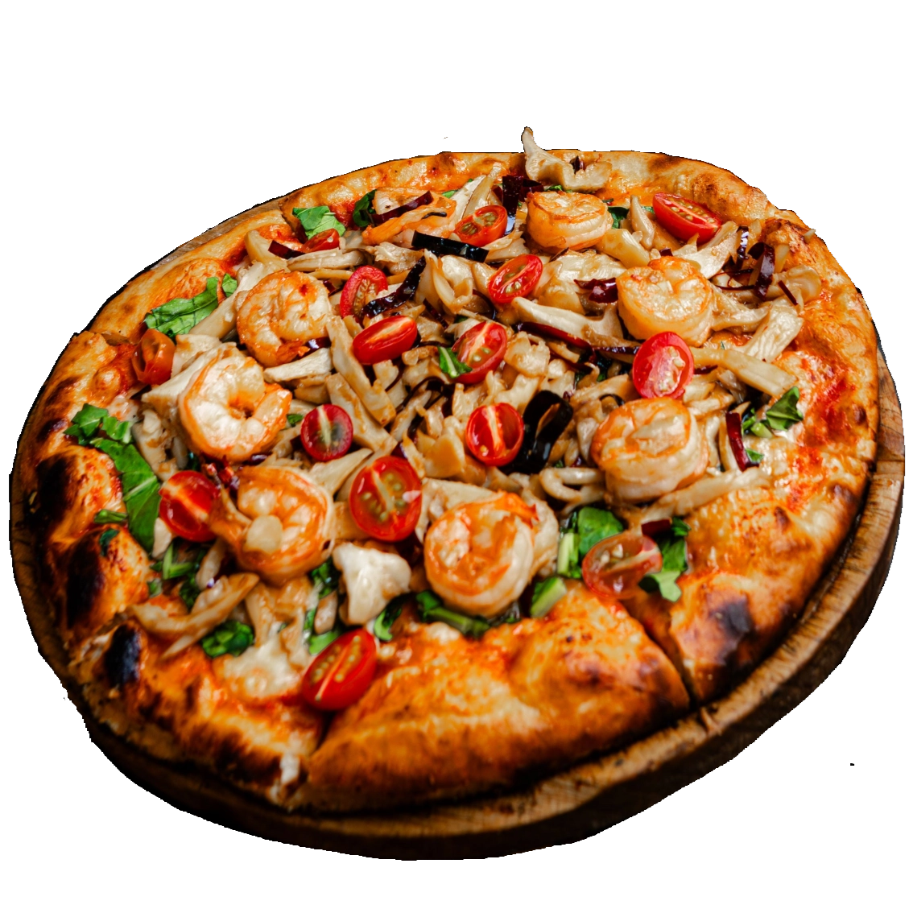

L'Antica Pirano
Paradižnikova omaka, sveža mocarela (fior di latte), kraljevi gamberi, češnjev paradižnik, strt česen, kapljica oljčnega olja z okusom limone in nežen posip grobe Piranske soli.
Pizzeria L'Antica Pirano
Dobrodošli v naši pizzeriji, kjer vas čaka okus tradicionalnih italijanskih pizze, pripravljenih s skrbno izbranimi sestavinami in tradicionalnimi metodami.
V osrčju brezčasnega Pirana, tam, kjer se ozke beneške ulice zlijejo z vonjem po soli in šumenjem valov, domuje Pizzerija L'Antica Pirano.
Naša zgodba se je rodila iz preproste ljubezni: do tradicije, vrhunskih sestavin in neapolitanskega načina peke, ki ga prepletamo s čarom slovenske obale. Verjamemo, da si dobra pica vzame čas. Naše testo zato vzhaja počasi in naravno, v peč pa potuje šele takrat, ko doseže popolno lahkotnost.
Dobrodošli doma. La vera pizza s piranskim pridihom.

Paradižnikova omaka, sveža mocarela (fior di latte), kraljevi gamberi, češnjev paradižnik, strt česen, kapljica oljčnega olja z okusom limone in nežen posip grobe Piranske soli.
Paradižnikova omaka, bivolja mocarela (mozzarella di bufala), tanke rezine istrskega pršuta, sveža rukola, lističi zorjenega parmezana in krema iz črnih istrskih tartufov.
Paradižnikova omaka San Marzano, vrhunska pikantna italijanska klobasa Salami Piccante / Nduja, lokalne črne olive, kapre, sveža mocarela in domače olje s čilijem.